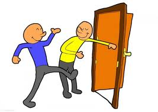
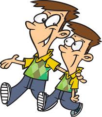
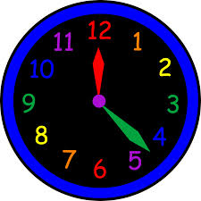
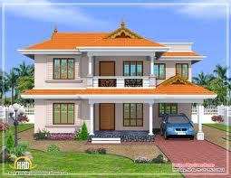
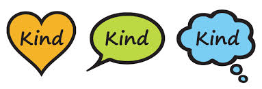

Bu web-programmada, iňlis dili gramatika düzgünleri görkezlen däldir. Bu web-programma, iňlis dili gramatika düzgünlerini bilip, öz iňlisçe gepleşik derejesini kämileşdirmek isleýänler üçin düzülendir. Söz baýlygny köpeltmek üçin her sapakda täze sözler, we söhbetdeşlikde köp ulanylýan sözlemli dialoglar görkezlen.
Söhbetdişlikde köp ulanylýan sözlemler
Audiony açyň we dialogy yzarlaň.
First lessons/lesson:
Birinji sapak:
You're an excellent doctor.
Siz orän gowy doktor.
Thank you, you’re very polite.
Sag boluň, siz orän sypaýçylykly.
This is my brother John.
Bu meniň doganym Jon.
Hello, I’m David
Salam,meniň adym Dewid.
oh dear, we’re late again.
Wah mähribanym, biz ýenede gijä galýarys.
It isn’t my fault.
Bu meniň günäm däl.
There isn’t a clock in my house.
Meniň oýümde sagat ýok.
This isn’t very difficult.
Bu gaty bir kyn däl.
Not at all.It’s easy.
Asla kyn däl. Bu örän aňsat.
She isn’t very pretty.
Ol gyz gaty bir owadan däl.
No, but she’s kind.
Ýok,ýone o gyz orän hoşamaý.
I’m sure this is our house.
Bu biziň oýümizdigine,men ynamly.
No it isn’t!
Ýok bu biziň oýümiz däl.
(I am, I’m) –( You are; you’re).
(Men bar);-(Sen'Siz' bar).
(it is, it’s); (he is, he’s); (we are, we’re).
(Bu bar);(Ol bar);(Biz bar).
isn’t; he isn’t late.
Ol(bu) yok; Ol gijä galanok.
aren’t; we aren’t polite.
Biz(Siz,Olar) yok; Biz sypaýy däl.
New words-Täze sözler
| Söz | Terjime | Okalyşy | Surat | Aýdylşy(audio) |
|---|---|---|---|---|
| birkemsiz | excellent | [ˈeksələnt] | ||
| edepli | polite | [pəˈlaɪt] |  | |
| aga(dogan) | brother | [ˈbrʌðə(r)] |  | |
| mähriban(gadyrly) | dear | [dɪə(r)] | ||
| sagat | clock | [klɒk] |  | |
| jaý | house | [haʊs] |  | |
| kyn | difficult | [ˈdɪfɪkəlt] | ||
| eýjejik | pretty | [ˈprɪti] | ||
| hoşamay | kind | [kaɪnd] |  | |
| giç | late | [leɪt] |